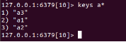

Redis
是一种高性能的Key-Value数据库
NoSQL介绍
NoSQL：一类新出现的数据库(not only sql)，它的特点：
1.不支持SQL语法
2.存储结构跟传统关系型数据库中的那种关系表完全不同，nosql中存储的数据都是Key-Value形式
3.NoSQL的世界中没有一种通用的语言，每种nosql数据库都有自己的api和语法，以及擅长的业务场景
· NoSQL中的产品种类相当多：
Mongodb
Redis
Hbase hadoop
Cassandra hadoop
NoSQL和SQL数据库的比较：
· 适用场景不同：sql数据库适合用于关系特别复杂的数据查询场景，nosql反之
· 两者在不断地取长补短，呈现融合趋势
Redis简介
· Redis是一个开源的使用ANSI C语言编写、支持网络、可基于内存亦可持久化的日志型、Key-Value数据库，并提供多种语言的API。从2010年3月15日起，Redis的开发工作由VMware主持。从2013年5月开始，Redis的开发由Pivotal赞助。
· Redis是 NoSQL技术阵营中的一员，它通过多种键值数据类型来适应不同场景下的存储需求，借助一些高层级的接口使用其可以胜任，如缓存、队列系统的不同角色
Redis特性
· Redis 与其他 key - value 缓存产品有以下三个特点：
· Redis支持数据的持久化，可以将内存中的数据保存在磁盘中，重启的时候可以再次加载进行使用。
· Redis不仅仅支持简单的key-value类型的数据，同时还提供list，set，zset，hash等数据结构的存储。
· Redis支持数据的备份，即master-slave模式的数据备份。
Redis 优势
· 性能极高 – Redis能读的速度是110000次/s,写的速度是81000次/s 。
· 丰富的数据类型 – Redis支持二进制案例的 Strings, Lists, Hashes, Sets 及 Ordered Sets 数据类型操作。
· 原子 – Redis的所有操作都是原子性的，同时Redis还支持对几个操作全并后的原子性执行。
· 丰富的特性 – Redis还支持 publish/subscribe, 通知, key 过期等等特性。redis应用场景
· 用来做缓存(ehcache/memcached)——redis的所有数据是放在内存中的（内存数据库）
· 可以在某些特定应用场景下替代传统数据库——比如社交类的应用
· 在一些大型系统中，巧妙地实现一些特定的功能：session共享、购物车
· 只要你有丰富的想象力，redis可以用在可以给你无限的惊喜…….
中文官网Redis.cn
1.1安装
· 当前redis最新稳定版本是4.0，常用版本3.2版本。
· step1:下载
wget http://download.redis.io/releases/redis-3.2.8.tar.gz
· step2:解压
tar -zxvf redis-3.2.8.tar.gz
· step3:复制，放到usr/local/redis⽬录下
sudo mv ./redis-3.2.8 /usr/local/redis/
· step4:进⼊redis⽬录
cd /usr/local/redis/
· step5:生成
a) 安装c语言编译器gcc
sudo apt-get install gcc
b) 安装编译命令make
sudo apt-get install make(这一步可能会出问题，根据提示执行命令)
c) 生成
sudo make(比较慢)
· step6:测试,这段运⾏时间会较⻓
sudo make test
解决方法
cd
wget http://downloads.sourceforge.net/tcl/tcl8.6.1-src.tar.gz
sudo tar xzvf tcl8.6.1-src.tar.gz -C /usr/local/
cd /usr/local/tcl8.6.1/unix/
sudo ./configure
sudo make（时间比较长）
sudo make install
· step7:安装,将redis的命令安装到/usr/local/bin/⽬录
sudo make install （时间比较长）
· step8:安装完成后，我们进入目录/usr/local/bin中查看
cd /usr/local/bin
ls -all
a) redis-server redis服务器
b) redis-cli redis命令行客户端
c) redis-benchmark redis性能测试工具
d) redis-check-aof AOF文件修复工具
e) redis-check-rdb RDB文件检索工具
· step9:配置⽂件，移动到/etc/⽬录下
· 配置⽂件⽬录为/usr/local/redis/redis.conf
sudo cp /usr/local/redis/redis.conf /etc/redis/
1.2配置
· Redis的配置信息在/etc/redis/redis.conf下。
· 查看
sudo vi /etc/redis/redis.conf
核心配置选项
· 绑定ip：如果需要远程访问，可将此⾏注释，或绑定⼀个真实ip
bind 127.0.0.1
· 端⼝，默认为6379
port 6379
· 是否以守护进程运⾏
a) 如果以守护进程运⾏，则不会在命令⾏阻塞，类似于服务
b) 如果以⾮守护进程运⾏，则当前终端被阻塞
c) 设置为yes表示守护进程，设置为no表示⾮守护进程
d) 推荐设置为yes
daemonize yes
· 数据⽂件
dbfilename dump.rdb
· 数据⽂件存储路径
dir /var/lib/redis
· ⽇志⽂件
logfile /var/log/redis/redis-server.log
· 数据库，默认有16个
database 16
· 主从复制，类似于双机备份。
slaveof
1.3服务器端和客户端命令
服务器端
· 服务器端的命令为redis-server
· 可以使⽤help查看帮助⽂档
redis-server --help
· 推荐使⽤服务的⽅式管理redis服务
· 启动
sudo service redis start
· 停⽌
sudo service redis stop
· 重启 sudo service redis restart
· 个人习惯
ps -aux|grep redis 查看redis服务器进程
sudo kill -9 pid 杀死redis服务器
sudo redis-server /etc/redis/redis.conf 指定加载的配置文件
客户端
· 客户端的命令为redis-cli
· 可以使⽤help查看帮助⽂档
redis-cli --help
· 连接redis
redis-cli
· 运⾏测试命令
ping
· 切换数据库
· 数据库没有名称，默认有16个，通过0-15来标识，连接redis默认选择第一个数据库
select n
1.4数据库操作
数据库结构
· redis是key-value的数据结构，每条数据都是⼀个键值对
· 键的类型是字符串
· 注意：键不能重复
· 值的类型分为五种：
o 字符串string
o 哈希hash
o 列表list
o 集合set
o 有序集合zset
数据库操作行为
· 保存
· 修改
· 获取
· 删除
点击中⽂官⽹查看命令⽂档http://redis.cn/commands.html
1.4.1 string类型
· 字符串类型是Redis中最为基础的数据存储类型，该类型可以接受任何格式的数据，如JPEG图像数据或Json对象描述信息等。在Redis中字符串类型的Value最多可以容纳的数据长度是512M。
保存
如果设置的键不存在则为添加，如果设置的键已经存在则修改
· 设置键值
set key value
· 例1：设置键为name值为itcast的数据
set name itcast
· 设置键值及过期时间，以秒为单位
setex key seconds value
· 例2：设置键为aa值为aa过期时间为3秒的数据
setex aa 3 aa
· 设置多个键值
mset key1 value1 key2 value2 ...
· 例3：设置键为'a1'值为'go'、键为'a2'值为'c++'、键为'a3'值为'c'
mset a1 go a2 c++ a3 c
· 追加值
append key value
· 例4：向键为a1中追加值' 真棒'
append 'a1' '真棒'
中文乱码问题的解决
a) 退出redis客户端
Exit
b) 再次进图redis客户端
Redis-cli --raw
获取
· 获取：根据键获取值，如果不存在此键则返回nil
get key
· 例5：获取键'name'的值
get 'name'
· 根据多个键获取多个值
mget key1 key2 ...
· 例6：获取键a1、a2、a3'的值
mget a1 a2 a3
删除
详⻅下节键的操作，删除键时会将值删除
1.4.2键命令
· 查找键，参数⽀持正则表达式
keys pattern
· 例1：查看所有键
keys *
· 例2：查看名称中包含a的键
keys 'a*'

· 判断键是否存在，如果存在返回1，不存在返回0
exists key1
· 例3：判断键a1是否存在
exists a1
· 查看键对应的value的类型
type key
· 例4：查看键a1的值类型，为redis⽀持的五种类型中的⼀种
type a1
· 删除键及对应的值
del key1 key2 ...
· 例5：删除键a2、a3
del a2 a3
· 设置过期时间，以秒为单位
· 如果没有指定过期时间则⼀直存在，直到使⽤DEL移除
expire key seconds
· 例6：设置键'a1'的过期时间为3秒
expire 'a1' 3
· 查看有效时间，以秒为单位
ttl key
· 例7：查看键'bb'的有效时间
ttl bb
1.4.3hash类型
· hash⽤于存储对象，对象的结构为属性、值
· 值的类型为string
增加、修改
· 设置单个属性
hset key field value
· 例1：设置键 user的属性name为itheima
hset user name itheima
· 设置多个属性
hmset key field1 value1 field2 value2 ...
· 例2：设置键u2的属性name为itcast、属性age为11
hmset u2 name itcast age 11
获取
· 获取指定键所有的属性
hkeys key
· 例3：获取键u2的所有属性
hkeys u2
获取⼀个属性的值
hget key field
· 例4：获取键u2属性'name'的值
hget u2 'name'
· 获取多个属性的值
hmget key field1 field2 ...
· 例5：获取键u2属性'name'、'age的值
hmget u2 name age
· 获取所有属性的值
hvals key
· 例6：获取键'u2'所有属性的值
hvals u2
· 获取一个hash有多少个属性
hlen key
· 例7：获取键'u2'有多少个属性
Hlen u2
删除
· 删除整个hash键及值，使⽤del命令
· 删除属性，属性对应的值会被⼀起删除
hdel key field1 field2 ...
· 例7：删除键'u2'的属性'age'
hdel u2 age

1.4.4 list类型
· 列表的元素类型为string
· 按照插⼊顺序排序
增加
· 在左侧插⼊数据
lpush key value1 value2 ...
· 例1：从键为'a1'的列表左侧加⼊数据a 、 b 、c
lpush a1 a b c
· 在右侧插⼊数据
rpush key value1 value2 ...
· 例2：从键为'a1'的列表右侧加⼊数据0 1
rpush a1 0 1
· 在指定元素的前或后插⼊新元素
linsert key before或after 现有元素 新元素
· 例3：在键为'a1'的列表中元素'b'前加⼊'3'
linsert a1 before b 3

获取
· 返回列表⾥指定范围内的元素
o start、stop为元素的下标索引
o 索引从左侧开始，第⼀个元素为0
o 索引可以是负数，表示从尾部开始计数，如-1表示最后⼀个元素
lrange key start stop
· 例4：获取键为'a1'的列表所有元素
lrange a1 0 -1
设置指定索引位置的元素值
索引从左侧开始，第⼀个元素为0
· 索引可以是负数，表示尾部开始计数，如-1表示最后⼀个元素
lset key index value
· 例5：修改键为'a1'的列表中下标为1的元素值为'z'
lset a1 1 z
删除
· 删除指定元素
o 将列表中前count次出现的值为value的元素移除
o count > 0: 从头往尾移除
o count < 0: 从尾往头移除
o count = 0: 移除所有
lrem key count value
· 例6.1：向列表'a2'中加⼊元素'a'、'b'、'a'、'b'、'a'、'b'
lpush a2 a b a b a b
例6.2：从'a2'列表右侧开始删除2个'b'
lrem a2 -2 b
· 例6.3：查看列表'py12'的所有元素
lrange a2 0 -1
1.4.5 set类型
· ⽆序集合
· 元素为string类型
· 元素具有唯⼀性，不重复
· 说明：对于集合没有修改操作
增加
· 添加元素
sadd key member1 member2 ...
· 例1：向键'a3'的集合中添加元素'zhangsan'、'lisi'、'wangwu'
sadd a3 zhangsan sili wangwu
获取
· 返回所有的元素
smembers key
· 例2：获取键'a3'的集合中所有元素
smembers a3
删除
· 删除指定元素
srem key value
· 例3：删除键'a3'的集合中元素'wangwu'
srem a3 wangwu
1.4.6 zset类型
· sorted set，有序集合
· 元素为string类型
· 元素具有唯⼀性，不重复
· 每个元素都会关联⼀个double类型的score，表示权重，通过权重将元素从⼩到⼤排序
· 说明：没有修改操作
增加
· 添加
zadd key score1 member1 score2 member2 ...
· 例1：向键'a4'的集合中添加元素'lisi'、'wangwu'、'zhaoliu'、'zhangsan'，权重分别为4、5、6、3
zadd a4 4 lisi 5 wangwu 6 zhaoliu 3 zhangsan
获取
· 返回指定范围内的元素
· start、stop为元素的下标索引
· 索引从左侧开始，第⼀个元素为0
· 索引可以是负数，表示从尾部开始计数，如-1表示最后⼀个元素
zrange key start stop
· 例2：获取键'a4'的集合中所有元素
zrange a4 0 -1
· 返回score值在min和max之间的成员
zrangebyscore key min max
· 例3：获取键'a4'的集合中权限值在5和6之间的成员
zrangebyscore a4 5 6

· 返回成员member的score值
zscore key member
例4：获取键'a4'的集合中元素'zhangsan'的权重
zscore a4 zhangsan

删除
· 删除指定元素
zrem key member1 member2 ...
· 例5：删除集合'a4'中元素'zhangsan'
zrem a4 zhangsan
· 删除权重在指定范围的元素
zremrangebyscore key min max
· 例6：删除集合'a4'中权限在5、6之间的元素
zremrangebyscore a4 5 6
1.5通过go语言和redis数据库进行交互
安装命令
go get github.com/gomodule/redigo/redis
安装完成后，回到家目录创建test.go,把下面代码复制到test.go里面，编译执行test.go，之后在redis中查找到键c1值为hello，说明安装成功
package main
import ( "github.com/gomodule/redigo/redis")
func main(){
conn,_ := redis.Dial("tcp", ":6379")
defer conn.Close()
conn.Do("set", "c1", "hello")
}
1.5.1操作方法
Go操作redis文档https://godoc.org/github.com/gomodule/redigo/redis
连接数据库
Dial(network, address string)（conn,err）
执行数据库操作命令
Send(commandName string, args ...interface{}) error
Flush() error
Receive() (reply interface{}, err error)
Send函数发出指令，flush将连接的输出缓冲区刷新到服务器，Receive接收服务器返回的数据
例如：
c.Send("SET", "foo", "bar")
c.Send("GET", "foo")
c.Flush()//把缓冲区命令发到服务器
c.Receive() // 接收set请求返回的数据
v, err = c.Receive() // 接收get请求传输的数据
另外一种执行数据库操作命令
Do(commandName string, args ...interface{}) (reply interface{}, err error)
reply helper functions（回复助手函数）
Bool，Int，Bytes，map，String，Strings和Values函数将回复转换为特定类型的值。为了方便地包含对连接Do和Receive方法的调用，这些函数采用了类型为error的第二个参数。如果错误是非nil，则辅助函数返回错误。如果错误为nil，则该函数将回复转换为指定的类型：
exists, err := redis.Bool(c.Do("EXISTS", "foo"))
if err != nil {
//处理错误代码
}
reflect.TypeOf(exists)//打印exists类型
Scan函数
func Scan(src [] interface {},dest ... interface {})([] interface {},error)
Scan函数从src复制到dest指向的值。
Dest参数的值必须是整数，浮点数，布尔值，字符串，[]byte，interface{}或这些类型的切片。Scan使用标准的strconv包将批量字符串转换为数字和布尔类型。
示例代码
var value1 int
var value2 string
reply, err := redis.Values(c.Do("MGET", "key1", "key2"))
if err != nil {
//处理错误代码
}
if _, err := redis.Scan(reply, &value1, &value2); err != nil {
// 处理错误代码
}
1.5.2与案例结合
序列化与反序列化
序列化(字节化)
var buffer bytes.Buffer//容器
enc :=gob.NewEncoder(buffer)//编码器
err:=enc.Encode(dest)//编码
反序列化（反字节化）
dec := gob.NewDecoder(bytes.NewReader(buffer.bytes()))//解码器
dec.Decode(src)//解码
1.6搭建主从
主从概念
a) ⼀个master可以拥有多个slave，⼀个slave⼜可以拥有多个slave，如此下去，形成了强⼤的多级服务器集群架构
b) master用来写数据，slave用来读数据，经统计：网站的读写比率是10:1
c) 通过主从配置可以实现读写分离
d) master和slave都是一个redis实例
主从配置
配置主
a) 查看当前主机的ip地址
Ifconfig
b) 修改etc/redis/redis.conf文件
sudo vi redis.conf
bind 192.168.110.36
c) 重启redis服务
ps aux | grep redis
Sudo kill -9 12916
Sudo redis-server /etc/redis/redis.conf
配置从
a) 复制etc/redis/redis.conf文件
sudo cp redis.conf ./slave.conf
b) 修改redis/slave.conf文件
sudo vi slave.conf
c) 编辑内容
bind 192.168.110.36
slaveof 192.168.110.36 6379
port 6378
d) 开启redis服务
sudo redis-server slave.conf
e) 查看主从关系
redis-cli -h 192.168.110.36 info Replication
操作数据
a) 进入主客户端
redis-cli -h 192.168.110.36 -p 6379
b) 进入从客户端
redis-cli -h 192.168.110.36 -p 6378
c) 在master上写数据
mset a1 11 a2 22 a3 33
d) 在slave上读数据

1.7搭建集群
介绍
为什么要有集群
a) 服务器可能因为代码原因，人为原因，或者自然灾害等造成服务器损坏。数据服务就挂掉了
b) 大公司都会有很多的服务器(华东地区、华南地区、华中地区、华北地区、西北地区、西南地区、东北地区、台港澳地区机房)
集群的概念
集群是一组相互独立的、通过高速网络互联的计算机，它们构成了一个组，并以单一系统的模式加以管理。一个客户与集群相互作用时，集群像是一个独立的服务器。集群配置是用于提高可用性和可缩放性。
当请求到来首先由负载均衡服务器处理，把请求转发到另外的一台服务器上。
百度的ip地址 119.75.217.109/
61.135.169.121/
Redis集群
分类
Ø 软件层面
Ø 硬件层面
软件层面：只有一台电脑，在这台电脑上启动了多台redis服务
硬件层面：存在多台实体电脑,每台电脑都启动了一个redis或者多个redis服务
参考阅读
Redis搭建集群http://www.cnblogs.com/wuxl360/p/5920330.html
go语言redis-cluster开源客户端https://github.com/gitstliu/go-redis-cluster
配置机器1
Ø 在演示中，192.168.110.37为当前ubuntu机器的ip
Ø 在192.168.110.37上进⼊Desktop⽬录，创建conf⽬录
Ø 在conf⽬录下创建⽂件7000.conf，编辑内容如下
port 7000
bind 192.168.110.37
daemonize yes
pidfile 7000.pid
cluster-enabled yes
cluster-config-file 7000_node.conf
cluster-node-timeout 15000
appendonly yese
Ø 在conf⽬录下创建⽂件7001.conf，编辑内容如下
port 7001
bind 192.168.110.37
daemonize yes
pidfile 7001.pid
cluster-enabled yes
cluster-config-file 7001_node.conf
cluster-node-timeout 15000
appendonly yes
Ø 在conf⽬录下创建⽂件7002.conf，编辑内容如下
port 7002
bind 192.168.110.37
daemonize yes
pidfile 7002.pid
cluster-enabled yes
cluster-config-file 7002_node.conf
cluster-node-timeout 15000
appendonly yes
总结：这三个文件的配置区别只有port、pidfile、cluster-config-file三项
使用配置文件启动redis服务
redis-server 7000.conf
redis-server 7001.conf
redis-server 7002.conf
查看进程如下图
配置机器2
Ø 在演示中，192.168.110.38为当前ubuntu机器的ip
Ø 在192.168.110.38上进⼊Desktop⽬录，创建conf⽬录
Ø 在conf⽬录下创建⽂件7003.conf，编辑内容如下
port 7003
bind 192.168.110.38
daemonize yes
pidfile 7003.pid
cluster-enabled yes
cluster-config-file 7003_node.conf
cluster-node-timeout 15000
appendonly yes
Ø 在conf⽬录下创建⽂件7004.conf，编辑内容如下
port 7004
bind 192.168.110.38
daemonize yes
pidfile 7004.pid
cluster-enabled yes
cluster-config-file 7004_node.conf
cluster-node-timeout 15000
appendonly yes
Ø 在conf⽬录下创建⽂件7005.conf，编辑内容如下
port 7005
bind 192.168.110.38
daemonize yes
pidfile 7005.pid
cluster-enabled yes
cluster-config-file 7005_node.conf
cluster-node-timeout 15000
appendonly yes
总结：这三个文件的配置区别只有port、pidfile、cluster-config-file三项
使用配置文件启动redis服务
redis-server 7003.conf
redis-server 7004.conf
redis-server 7005.conf
查看进程如下图
创建集群
Ø redis的安装包中包含了redis-trib.rb，⽤于创建集群 //ruby
Ø 接下来的操作在192.168.110.37机器上进⾏
Ø 将命令复制，这样可以在任何⽬录下调⽤此命令
sudo cp /usr/share/doc/redis-tools/examples/redis-trib.rb /usr/local/bin/
Ø 安装ruby环境，因为redis-trib.rb是⽤ruby开发的
sudo apt-get install ruby
Ø 在提示信息处输⼊y，然后回⻋继续安装
Ø 运⾏如下命令创建集群
redis-trib.rb create --replicas 1 192.168.110.37:7000 192.168.110.37:7001 192.168.110.37:7002 192.168.110.38:7003 192.168.110.38:7004 192.168.110.38:7005
Ø 执⾏上⾯这个指令在某些机器上可能会报错,主要原因是由于安装的 ruby 不是最 新版本
天朝的防⽕墙导致⽆法下载最新版本,所以需要设置 gem 的源
解决办法如下：
//先查看⾃⼰的 gem 源是什么地址
gem source -l // 如果是https://rubygems.org/ 就需要更换
// 更换指令为
gem sources --add https://gems.ruby-china.com --remove https://rubygems.org/
// 通过 gem 安装 redis 的相关依赖
sudo gem install redis
// 然后重新执⾏指令
redis-trib.rb create --replicas 1 192.168.110.37:7000 192.168.110.37:7001 192.168.110.37:7002 192.168.110.38:7003 192.168.110.38:7004 192.168.110.38:7005

（提示信息输入yes即）
提示完成，集群搭建成功
数据验证
Ø 根据上图可以看出，当前搭建的主服务器为7000、7001、7003，对应的从服务器是7005、7004、7002
Ø 在192.168.110.37机器上连接7002，加参数-c表示连接到集群
redis-cli -h 192.168.110.37 -c -p 7002
Ø ⾃动跳到了7003服务器，并写⼊数据成功
Ø 在7003可以获取数据，如果写入数据又重定向到7001(负载均衡)
注意点
· Redis 集群会把数据存在⼀个 master 节点，然后在这个 master 和其对应的salve 之间进⾏数据同步。当读取数据时，也根据⼀致性哈希算法到对应的 master 节 点获取数据。只有当⼀个master 挂掉之后，才会启动⼀个对应的 salve 节点，充 当 master
· 需要注意的是：必须要3个或以上的主节点，否则在创建集群时会失败，并且当存 活的主节点数⼩于总节点数的⼀半时，整个集群就⽆法提供服务了
go语言redis-cluster开源客户端
安装：
go get github.com/gitstliu/go-redis-cluster
示例代码
func (this*ClusterController)Get(){
cluster, _ := redis.NewCluster(
&redis.Options{
StartNodes: []string{"192.168.110.37:7000", "192.168.110.37:7001", "192.168.110.37:7002","192.168.110.38:7003","192.168.110.38:7004","192.168.110.38:7005"},
ConnTimeout: 50 * time.Millisecond,
ReadTimeout: 50 * time.Millisecond,
WriteTimeout: 50 * time.Millisecond,
KeepAlive: 16,
AliveTime: 60 * time.Second,
})
cluster.Do("set","name","itheima")
name,_ := redis.String(cluster.Do("get","name"))
beego.Info(name)
this.Ctx.WriteString("集群创建成功")
}